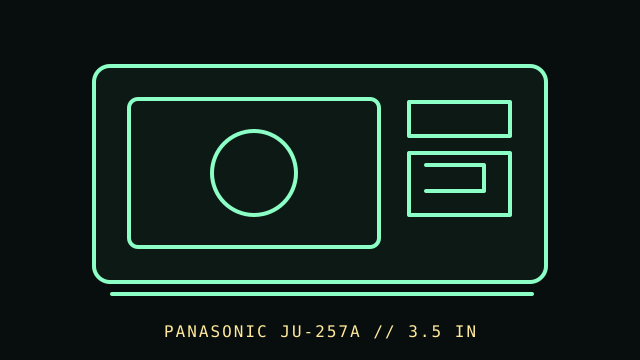

[ FLOPPY DRIVES // IDENTIFIED MODEL ]
Panasonic JU-257A 3.5-inch Drive Family
Panasonic JU-257A is a 3.5-inch floppy-drive family covered by a Panasonic application manual. The suffix identifies materially different variants, so this entry is family-level rather than one universal capacity specification.

MODEL IDENTIFICATION: Panasonic JU-257A series; record every suffix character (including Axxx), revision, label, and connector before identifying the exact unit. This record keeps variant-dependent claims qualified; verify the physical unit and applicable manual before connecting, servicing, or formatting media.
Recorded specifications
| Catalog model | Panasonic JU-257A 3.5-inch Drive Family |
|---|---|
| Device type | Internal 3.5-inch floppy-drive family |
| Interface / connector | Refer to the exact JU-257A suffix/application manual for connector and signal configuration; do not assume every family variant maps to the same host mode. |
| Media / formats | 3.5-inch disks; supported density, track geometry, and recording format vary by JU-257A submodel and host controller. No generic capacity is assigned to the whole family. |
| Revision caution | Match full model code, board/ROM/firmware revision, connector, cable, and documentation edition. Family-level ratings and host claims do not automatically apply to every unit. |
Host-controller and format compatibility
- Match the full JU-257A suffix to the Panasonic application manual; firmware/BIOS and controller support must match the drive’s actual density and signal options.
- Confirm connector pinout, power, drive-select configuration, density/mode signals, and cable orientation. A standard-looking 34-pin connector is not sufficient evidence of a safe match.
- Formatting and capacity depend on drive variant, media, and host controller/BIOS. Verify configuration in a known compatible system before preservation use.
Preservation and safe cleaning
Disconnect power and the ribbon cable before service. Inspect media for mold, creases, shutter damage, or coating loss before insertion. Follow the manual for the exact suffix when cleaning the head; do not use household solvents or adjust alignment casually.
For a disk acquisition, record the physical media label and condition, drive/model/revision, controller, host, software/firmware, settings, and any errors. Keep original media and raw captures/images unchanged; checksum verified copies and document conversions as derivatives.
Primary manuals & standards/archive references
- Panasonic JU-257A Application Manual, F1905680A4 (May 1997) — Bitsavers / Internet ArchiveManufacturer application manual for the JU-257A series; exact suffix is required.
- Panasonic JU-257A application documentation — Bitsavers archiveAlternate Bitsavers catalog record for the manufacturer application manual.
Source scope is stated per link. Prefer the matching manufacturer manual and revision over family summaries. Capacities and recording modes are omitted when not supported for the exact model and format.